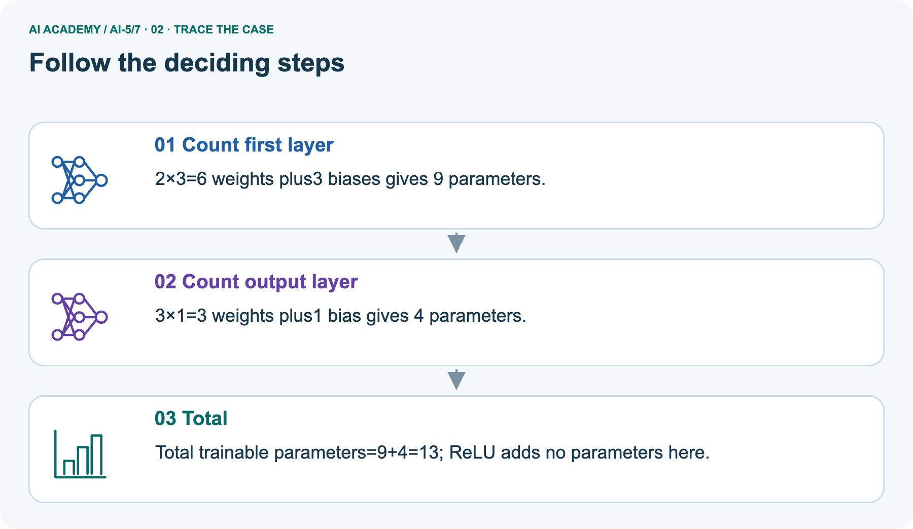
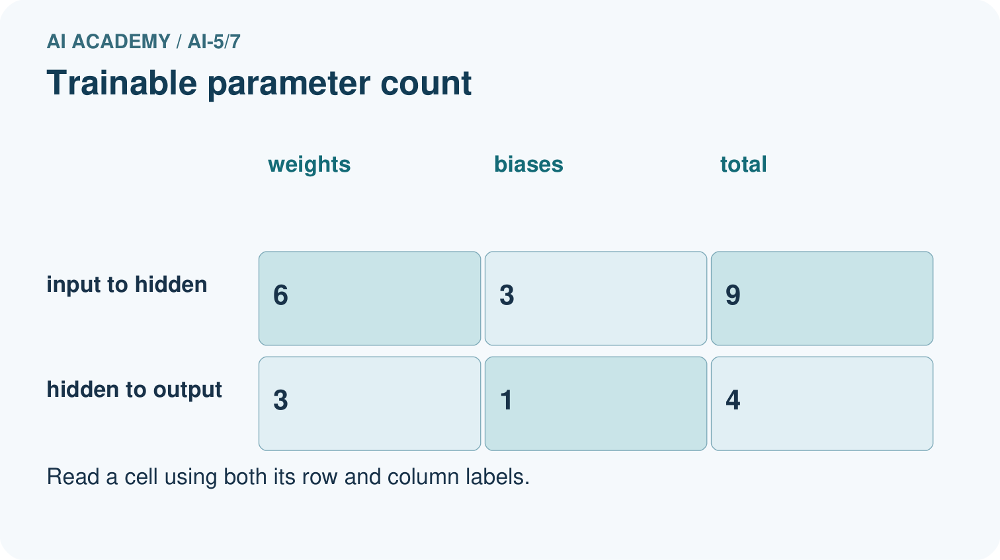
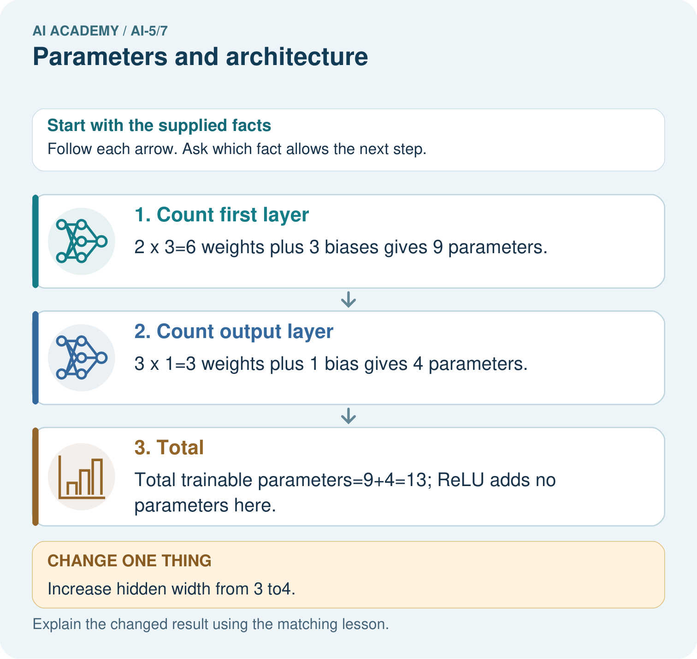
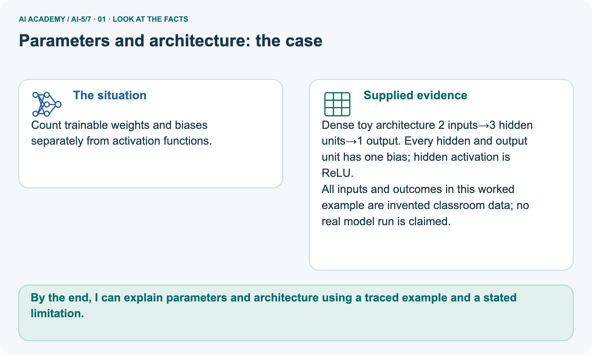
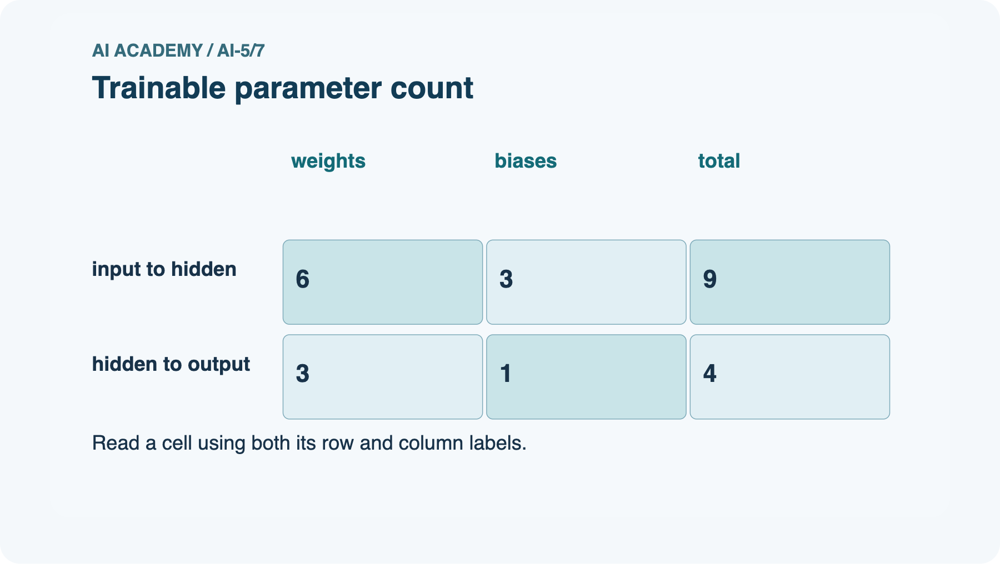
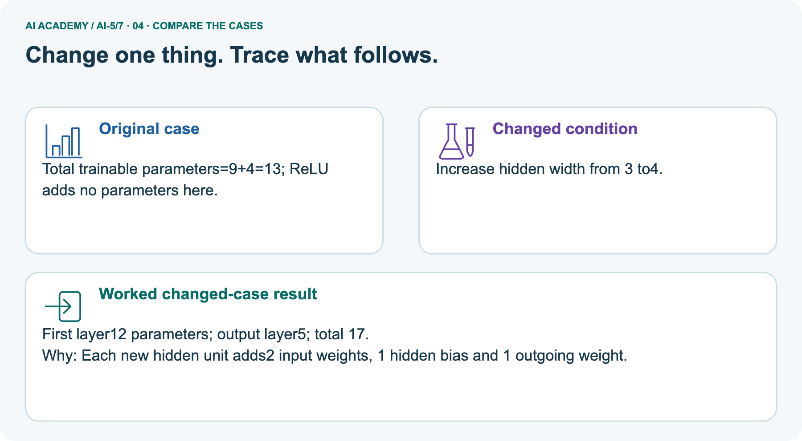
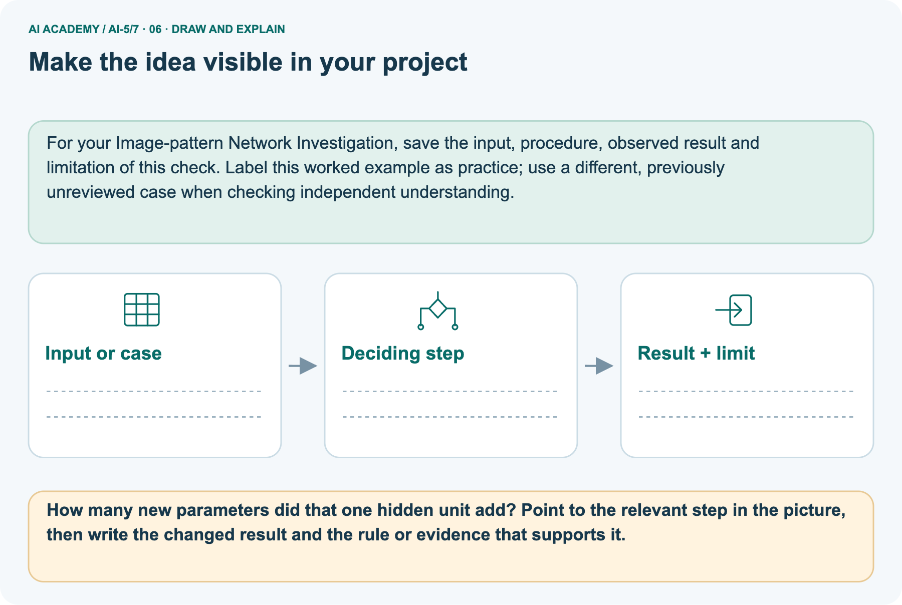

AI Academy · Level 5 · Grade 10 · Week 7 · Teacher guide
Parameters and architecture
Learn to understand, design, build, test and explain AI systems responsibly.
Project: Image-pattern Network Investigation
THE CONNECTED WEEK
Teach the count with its assumptions.
Show every incoming/outgoing connection and receiving bias;separate parameter values,computed activations and training settings.
Keep one habit: Assess both layers of the independent architecture and the stated evidence limits using checked keys.
Main lesson · Section 1
Prepare the connected mathematical investigation
Keep explanation,shared practice and independent evidence distinct.
Target and main teaching plan
Primary target: Distinguish architectural choices from parameter values
| Session | Sequence and minutes | Resources |
|---|---|---|
| Session 1 · Understand · 45 min | 0–7: recall and prerequisite; 7–15: inspect the concrete case and predict; 15–30: teacher models the worked trace; 30–40: learners explain a step using the text and visual; 40–45: check the core idea. | Use Your mission, Notice the evidence, See how it works, Words that unlock the idea and Follow a worked example; record recall in the workbook. |
| Session 2 · Practise · 45 min | 0–5: retrieve the procedure; 5–15: W2 completion practice; 15–23: explain and check with a partner; 23–30: each learner answers the misconception check; 30–40: targeted reteaching or a harder variation; 40–45: prepare the investigation. | Use Find and repair a mistake, Practise together and Build your understanding; use the matching workbook W2 and Individual reasoning check. |
| Session 3 · Investigate and transfer · 45 min | 0–5: retrieve the decision rule; 5–20: investigate or trace; 20–30: start the independent case; 30–38: connect the project; 38–43: act on feedback; 43–45: plan the return check. | Use Run the investigation, Connect your project and Try a new case independently. Allow extra time for the full task set. When code is supplied, use the examples in See how it works or Follow a worked example and the browser lab in Supported practice, repair and portfolio. |
This is a starting allocation of 135 minutes, not a validated duration. Preserve all named topics. Schedule extra time for connected examples, the full investigation, independent cases and project building.
Repeated copies of a case share one recorded attempt; they are not new evidence.
Preparation and prerequisite
Printed lesson and workbook; paper and pencil
Calculator and optional local Python 3 editor; no packages or AI accounts needed
Use the fictional examples supplied; prepare the fresh retry before class
Scores, activations and outputs may change. The weights, biases, connections and activation choices stay fixed.
Opening retrieval
Without opening the old lesson, explain one key idea from Forward passes by hand. Give an example and a mistake that the idea helps you avoid.
Look for: Record scores and activations in dependency order
Reference example, not the only acceptable wording: Teacher explanation: z = [-3, 3], h = [0, 3], y = -5.
Without opening the old lesson, explain one key idea from Activation functions. Give an example and a mistake that the idea helps you avoid.
Look for: Trace identity ReLU and sigmoid on a numerical score
Reference example, not the only acceptable wording: Teacher explanation: Identity gives -2, 0, 2; ReLU gives 0, 0, 2. ReLU retains the positive score itself; it is not a step classifier.
Without opening the old lesson, explain one key idea from Representing inputs as vectors. Give an example and a mistake that the idea helps you avoid.
Look for: Encode a record using a fixed feature order and units
Reference example, not the only acceptable wording: Teacher explanation: A [4, 2], B [2, 4], C [3, 3]. Each has dimension 2. The table has 3 rows and 2 columns.
Pictured end goal
By the end, I can explain parameters and architecture using a traced example and a stated limitation.
Earlier wording, alternatives and picture transcripts
Teach the learning cycle
Retrieval answer guidance
Forward passes by hand
Activation functions
Representing inputs as vectors
Teach counting through one drawn unit before using a formula. Explicitly state the dense connectivity and bias assumptions.
Architecture is chosen by a designer; this does not imply it can never be selected using a separate search procedure.
Outcomes
Distinguish architectural choices from parameter values
Count weights and biases in a small dense network
Explain why parameter count alone cannot establish quality
Preparation
Prerequisite answer
End goal for the pictorial case
This added worked case illustrates the week’s main idea. Retain all original and connected topics; schedule its practice within the teaching cycle.
Main lesson · Section 2
Make each parameter slot and counting assumption visible
Distinguish model values,architecture,computed activations and training settings.
Main explanation,complete slots and changed-width count
Consider a dense network with 2 inputs, 3 hidden units using ReLU, and 1 output unit using identity. We call its widths 2 to 3 to 1. These widths, connectivity and activation choices describe its architecture.
The weights and biases supply the numerical values used by that architecture.
A fully connected hidden unit receiving 2 inputs needs 2 weights plus 1 bias. Three such units need 6 weights and 3 biases. The output receives 3 activations and needs 3 weights plus 1 bias. Total: 13 parameters.
Input values and computed activations are not additional parameters.
This counting rule assumes one separate bias per output unit and no shared or tied weights. Other architectures can use different rules.
For a dense layer with n input components and m output units, each output has n weights and one bias. The count is n times m plus m, or (n + 1) times m. Count each layer separately before adding.
The helper assumes positive integer widths and the bias convention stated above. It is a counting aid, not a model trainer. A ReLU has no fitted numerical parameters in this example.
| Parameter slots; one value per named slot | Count |
|---|---|
| Hidden unit 1:w11, w12, b1 | 3 |
| Hidden unit 2:w21, w22, b2 | 3 |
| Hidden unit 3:w31, w32, b3 | 3 |
| Output:v1, v2, v3, c | 4 |
| Total; inputs and hidden activations excluded | 13 |
| Same2-input/1-output dense convention | Hidden weights | Hidden biases | Output weights | Output bias | Total |
|---|---|---|---|---|---|
| Hidden width 3 | 6 | 3 | 3 | 1 | 13 |
| Hidden width 4 | 8 | 4 | 4 | 1 | 17 |
| What one added hidden unit changes | +2 | +1 | +1 | +0 | +4 |
Guided: hidden layer 12, output layer 5, total 17, four more than 13. Exit: ask for architecture, activations, ordered input schema and exact weights/biases; equal parameter counts do not establish matching computations.
Complete pictured architecture and scope
Count trainable weights and biases separately from activation functions.
Dense toy architecture 2 inputs→3 hidden units→1 output. Every hidden and output unit has one bias; hidden activation is ReLU.
All inputs and outcomes in this worked example are invented classroom data; no real model run is claimed.
The picture and main count use the same fully connected 2→3→1 architecture:6 hidden weights+3 hidden biases+3 output weights+1 output bias=13. ReLU contributes no fitted parameter here. Increasing only hidden width 3→4 adds2 incoming weights, 1 hidden bias and 1 outgoing weight:4 more, total 17. It changes both adjacent layers; the output bias remains one.
Parameter values, computed activations and learning rate are not additional architectural connection slots.
Trace incoming,bias and outgoing increments



Read the picture one step at a time
Count one weight for each input-to-unit connection and one bias for each receiving unit. Two inputs connecting to three hidden units make six weights.
The three hidden outputs connect to one output unit through three more weights. ReLU applies a fixed function and adds no adjustable parameter here.
Architecture determines the connection pattern; learned values occupy those connections.
Parameter count describes capacity and storage structure, not accuracy, intelligence or guaranteed generalisation.
Change: Increase hidden width from 3 to4.
Prediction: First layer 12 parameters; output layer 5; total 17.
Reason: Each new hidden unit adds 2 input weights, 1 hidden bias and 1 outgoing weight.
Earlier wording, alternatives and picture transcripts
| Term | Meaning |
|---|---|
| Parameter | A numerical model value that a fitting procedure may adjust |
| Architecture | The arrangement of layers, connections and activation choices |
| Dense layer | A layer in which each output unit has a weight for every input component |
| Hyperparameter | A setting chosen for a model or training procedure rather than fitted as an ordinary weight |
Decide what a change alters
Model the reasoning aloud
Use the complete worked example below before asking learners to complete W2. Reveal a small part, invite a prediction, then explain the deciding step.
These teacher notes contain solutions; do not reveal the independent case answer during modelling.
Decide what a change alters
| Thinking move | Teacher prompt |
|---|---|
| Plan | What is given? What is the question? Which procedure fits these facts? |
| Do | Point to each input and intermediate step in the worked trace. Name the rule that allows the next step. |
| Check | Does the output answer the question? Which assumption or limitation prevents a larger claim? |
Use the diagram and verbal explanation together. Ask learners to match a sentence to a specific visual step; do not assign learners fixed visual or auditory learning styles.
A pictorial worked case: Parameters and architecture
The facts we will use






Why this result follows
What this example does not establish
Change one thing in the pictured case
Ask while showing the picture
Cover the result. Ask learners to name the inputs and predict the next step. Uncover one step, connect the icon to the actual procedure, and explain its evidence. Then change the supplied condition and compare.
The picture is a representation; it does not document execution of a real AI model.
Main lesson · Section 3
Model a step,then remove help
Collect each learner’s reasoning before showing a key.
Current completion task and checked reasoning
Completion task: Classify hidden activation 0.7, weight -2, hidden width 3 and learning rate 0.1 as computed value, parameter, architecture choice or training setting.
Teacher check: Teacher explanation: Activation 0.7 is computed; weight -2 is a parameter; width 3 is an architecture choice; learning rate 0.1 is a training setting.
Start by identifying the given inputs together. Leave the intermediate steps blank. If needed, model one step, then withdraw that help on the next step. Move to a full trace only when the partial trace is understood.
For partners, alternate explainer and checker; collect a response from every learner before discussion.
Individual misconception check
Use the worked case for Parameters and architecture. Proposed explanation: “Count one bias per input”. Decide whether this explanation is supported.
Point to the step or supplied fact that decides; explain your repair if needed.
Expected correction: Here each output unit has its own bias. A layer with m outputs has m biases.
Collect explanations, not only yes/no votes. If a misunderstanding is common, re-model the relevant step for the class.
If it affects a few learners, give a short targeted group explanation while others solve a more demanding variation.
Pictured reasoning and changed case
How many new parameters did that one hidden unit add? Point to the relevant step in the picture, then write the changed result and the rule or evidence that supports it.
Four. The total changes from 13 to17, while the single output bias is not duplicated. Changed-case check: First layer 12 parameters; output layer 5; total 17.
Each new hidden unit adds 2 input weights, 1 hidden bias and 1 outgoing weight.
Changed-case reasoning: First layer 12 parameters; output layer 5; total 17. Each new hidden unit adds 2 input weights, 1 hidden bias and 1 outgoing weight.
Collect each learner’s explanation before discussion. Use the first missing connection between input, deciding step and result to choose support. This question is worked-case practice, not fresh mastery evidence.
Accessible support and extension
Use See how it works and Follow a worked example. Collect a prediction before revealing its result; ask the learner to point to each intermediate fact.
Use a connection grid and a separate bias box per output. Extension: for 2 to h to 1, derive 3h + h + 1 = 4h + 1; test h = 1 and h = 5. Explain why this rule is specific to the stated architecture.
Earlier wording, alternatives and picture transcripts
| Time or stage | Teacher action |
|---|---|
| Session 1 start to 7 minutes | Retrieve fixed parameters versus changing activations from a forward pass. |
| 7 to 18 minutes | Draw three hidden units, each with two input weights and a bias. Count without a formula first. |
| 18 to 32 minutes | Complete W1 and the 13-parameter worked table. Derive (n + 1) times m. |
| 32 to 45 minutes | Trace the optional counting code, classify changes and complete W2. |
| Session 2 start to 8 minutes | Recall the assumptions behind the count, then discuss omitted biases in W3. |
| 8 to 20 minutes | Complete the guided 2 to 4 to 1 count; compare size without assuming quality. |
| 20 to 35 minutes | Collect W4 independently with separate layer totals and the wider variant. |
| 35 to 45 minutes | Use W5 and the exit response to define the evidence needed for a model comparison. |
Reduce help deliberately
Individual reasoning check
Pictorial practice question
Reasoned teacher answer
Main lesson · Section 4
Run the complete supplied investigation
Separate predictions,actual runs and paper traces.
Complete inputs,expected results and limits
Main13, wider 17, no-bias 9. Quantity sorting as supplied; architecture width is also a design hyperparameter but not a numerical model weight. Independent3→2→2:8+6=14; hiddenwidth 4 gives16+10=26. Activations are computed, not independently fitted slots. Fair quality check fixes task/schema/data/splits/evaluation and records training settings/budget/seeds; do not infer benefit from 26 versus14 alone.
Diagnose the current misconceptions
Count one bias per input: Here each output unit has its own bias. A layer with m outputs has m biases.
Count the activation values as parameters: Activations change with the input; the network computes them.
More weights prove better learning: Capacity and performance differ. Compare measured outcomes with controlled conditions.
Use Run the investigation for the evidence ledger. Add a boundary or missing-input case and record the expected response before checking. More successful repeats of one case do not establish wider coverage.
Choose accessible support
| What the response shows | Next teaching action |
|---|---|
| Missing or misread facts | Read the case aloud, mark supplied versus unknown facts, and let the learner restate it. |
| Wrong procedure | Return to the deciding step in the worked case. Contrast it with the proposed incorrect explanation. |
| Arithmetic or implementation error | Trace intermediate values or lines; preserve the first mismatch and retry that step. |
| Correct result without a reason | Ask for a trace and a changed case before marking independent understanding. |
| An unsupported wider claim | Ask which supplied evidence supports the claim and which further observation would be needed. |
Offer an oral explanation, drawing, enlarged visual or fewer examples when that removes a reading/writing barrier. Keep the same reasoning goal.
Stretch secure learners by changing a boundary or assumption and asking them to defend the effect, not simply by assigning more of the same questions.
Earlier wording, alternatives and picture transcripts
Match the support to the first error
Main lesson · Section 5
Assess the new schema or calculation transfer
Keep the selected answer private until after a first attempt.
Selected independent task and checked answer
Selected case: A dense 3 to 2 to 2 network uses ReLU in the hidden layer and identity in the output layer, with one bias per unit. Give each layer count and the total.
If hidden width becomes 4, recount and explain why activation values are excluded.
Teacher explanation: Original: 3 times 2 + 2 = 8, then 2 times 2 + 2 = 6, total 14. Wider: 3 times 4 + 4 = 16, then 4 times 2 + 2 = 10, total 26.
Activations are computed from inputs and parameters, not separately fitted values.
Judge explanation,trace and limits
| Dimension | Evidence required |
|---|---|
| Explanation | Names the applicable idea or procedure and ties it to the supplied facts. |
| Trace and result | Preserves the given inputs and shows the relevant intermediate steps; distinguishes a prediction from an observed execution. |
| Limits | States the assumptions, missing evidence or conditions under which the result would change. |
Record each dimension as not yet, with support, or independent. Accept a valid alternative procedure with a defensible trace.
Do not penalise an honestly recorded model failure if the learner correctly explains its evidence and limits.
Give one usable repair
Name the earliest unsupported step and give one action to repair it. Have the learner make that repair now and explain why. Then assess the relevant skill on a fresh, fully specified case.
Confirm it was not previously practised with feedback; solve and check the new case before assigning it. A follow-up design prompt is a starting brief, not automatically an equivalent test.
W1 Count a single layer
A dense layer has 4 inputs and 2 outputs with one bias per output. Count weights, biases and total.
Teacher explanation: There are 8 weights and 2 biases, total 10.
W2 Sort the quantities
Classify hidden activation 0.7, weight -2, hidden width 3 and learning rate 0.1 as computed value, parameter, architecture choice or training setting.
Teacher explanation: Activation 0.7 is computed; weight -2 is a parameter; width 3 is an architecture choice; learning rate 0.1 is a training setting.
W3 Change the bias convention
Recount the 2 to 3 to 1 model if every bias is omitted. State what the original count assumed.
Teacher explanation: There are 6 + 3 = 9 weights and no biases. The original 13 assumed three hidden biases plus one output bias.
W5 Limit a size claim
A team says its 26-parameter model must outperform a 14-parameter model. Give a fair check and one reason the claim is unsupported.
Teacher explanation: Compare on the same valid evaluation task and cases after a documented fitting process. Count alone does not establish suitable features, successful optimisation or generalisation.
Earlier wording, alternatives and picture transcripts
Guided and exit questions
Guided: hidden layer 12, output layer 5, total 17, four more than 13. Exit: ask for architecture, activations, ordered input schema and exact weights/biases; equal parameter counts do not establish matching computations.
W1 Count a single layer
W2 Sort the quantities
W3 Change the bias convention
W4 Count a new architecture independently
A dense 3 to 2 to 2 network uses ReLU in the hidden layer and identity in the output layer, with one bias per unit. Give each layer count and the total.
If hidden width becomes 4, recount and explain why activation values are excluded.
Teacher explanation: Original: 3 times 2 + 2 = 8, then 2 times 2 + 2 = 6, total 14. Wider: 3 times 4 + 4 = 16, then 4 times 2 + 2 = 10, total 26.
Activations are computed from inputs and parameters, not separately fitted values.
W5 Limit a size claim
Independent assessment and fresh retry
W4 must show 8 + 6 = 14 and 16 + 10 = 26. Fresh retry: dense 2 to 2 to 3 with biases has 6 + 9 = 15 parameters. Without biases it has 4 + 6 = 10. Require the bias convention explicitly.
Assess independent transfer
Selected case answer
Feedback that the learner uses
Main lesson · Section 6
Connect,support and revisit the mathematics
Use the saved evidence to choose the next step.
Project and next-week bridge
Add a labelled parameters and architecture evidence sheet to Image-pattern Network Investigation. Show how you can distinguish architectural choices from parameter values.
Use the supplied fictional case and keep its inputs, intermediate steps, calculation or prediction, and limitation. Connect this record to last week’s record; a matching answer without a trace is insufficient.
Use a connection grid and a separate bias box per output. Extension: for 2 to h to 1, derive 3h + h + 1 = 4h + 1; test h = 1 and h = 5. Explain why this rule is specific to the stated architecture.
Week 8 introduces losses for comparing predictions with targets.
Retain the project ledger and assess a changed case after support. Check the relevant prerequisite before carrying this component forward.
For your Image-pattern Network Investigation, save the input, procedure, observed result and limitation of this check.
Label this worked example as practice; use a different, previously unreviewed case when checking independent understanding.
Delayed return and support record
Suggested return points in this level: ai-5/8, ai-5/10, ai-5/13. Use actual classroom dates, adjusting for holidays and gaps. One, three and six teaching weeks are scheduling choices, not a claimed optimal spacing.
At a delayed check, ask for the idea from memory and a changed application. Compare with the earlier independent response and record support used.
For a new level, revisit the previous capstone before checking the new prerequisites.
| Record | Teacher evidence |
|---|---|
| Learner code and date | |
| Concept and case used; prior exposure | |
| Explanation / trace / limits | |
| Support and first repair | |
| Changed case and delayed outcome | |
| Next teaching action |
Use the evidence to choose reteaching or the next step. A completed page, confidence rating or attractive project does not by itself demonstrate understanding.
Earlier wording, alternatives and picture transcripts
Plan the delayed return
Project evidence from this case
Reference bank and extra practice
Choose the reference that helps your next step.
Reference · Alternative planning checklist
Reference · Section 7
Reference · Alternative planning checklist
Use alongside the main route when helpful.
Planning,assessment and project reminders
Teaching target: Distinguish architectural choices from parameter values
Prepare the labelled worked-case picture, the matching workbook, fictional input cards and a place for individual responses. Check a local Python 3 environment before class; have a paper-trace version ready.
| Session | Plan | Resources |
|---|---|---|
| Session 1 · Understand · 45 min | 0–7: recall and prerequisite; 7–15: inspect the concrete case and predict; 15–30: teacher models the worked trace; 30–40: learners explain a step using the text and visual; 40–45: check the core idea. | Use Your mission, Notice the evidence, See how it works, Words that unlock the idea and Follow a worked example; record recall in the workbook. |
| Session 2 · Practise · 45 min | 0–5: retrieve the procedure; 5–15: W2 completion practice; 15–23: explain and check with a partner; 23–30: each learner answers the misconception check; 30–40: targeted reteaching or a harder variation; 40–45: prepare the investigation. | Use Find and repair a mistake, Practise together and Build your understanding; use the matching workbook W2 and Individual reasoning check. |
| Session 3 · Investigate and transfer · 45 min | 0–5: retrieve the decision rule; 5–20: investigate or trace; 20–30: start the independent case; 30–38: connect the project; 38–43: act on feedback; 43–45: plan the return check. | Use Run the investigation, Connect your project and Try a new case independently. Allow extra time for the full task set. When code is supplied, use the examples in See how it works or Follow a worked example and the browser lab in Supported practice, repair and portfolio. |
Before class, solve the supported practice: Classify hidden activation 0.7, weight -2, hidden width 3 and learning rate 0.1 as computed value, parameter, architecture choice or training setting.
Reasoned practice answer: Teacher explanation: Activation 0.7 is computed; weight -2 is a parameter; width 3 is an architecture choice; learning rate 0.1 is a training setting.
Check every learner before discussion: Use the worked case for Parameters and architecture. Proposed explanation: “Count one bias per input”. Decide whether this explanation is supported.
Point to the step or supplied fact that decides; explain your repair if needed.
Misconception repair: Here each output unit has its own bias. A layer with m outputs has m biases.
Support: read the exact case aloud, enlarge the labelled picture, supply input cards and model only the first deciding step. Accept a spoken explanation or drawing; retain the reasoning goal.
Extension: Increase hidden width from 3 to4. Require a prediction and a reason before comparing. Expected result: First layer 12 parameters; output layer 5; total 17.
Reason: Each new hidden unit adds 2 input weights, 1 hidden bias and 1 outgoing weight.
Independent assessment: withhold the reserved answer until the learner has attempted the new case. Record support separately from correctness.
| Criterion | Not yet | With support | Independent |
|---|---|---|---|
| Explanation | Names an answer without a deciding fact | Uses a hint to link fact and decision | Explains the deciding fact in own words |
| Trace or test | Cannot connect input and result | Completes steps with prompts | Traces or tests a changed case accurately |
| Limits and revision | Claims more than evidence supports | Names a limit after a prompt | States a defensible limit and useful next test |
Project checkpoint: Make a transparent first version. Keep a trace of how one input becomes an output; explain the rule or learned component.
Use the weekly teacher answer for topic-specific reasoning. A saved progress tick is an activity record; judge mastery from the learner’s explanation and evidence.
Reference · Feedback,labs and repair paths
Reference · Section 8
Reference · Feedback,labs and repair paths
Retain the first attempt and the evidence used for a repair.
Feedback and record guidance
Use the two formative questions as supported practice, not as independent mastery scores. Discuss the deciding evidence rather than accepting a guessed selection.
The feedback comes from the reviewed public worked case. Do not reveal the separately reserved independent teacher answer until the learner has attempted that case.
Ask students to predict before running code. Preserve errors and actual outputs; collect a changed test and an explanation. The branch-boundary and indexing lessons deliberately include failure cases.
Use the earlier worked-explanation links to address a specific missing building block, then return to the current question. Adapt this suggestion after observing the learner; it is not an automatic diagnosis.
Collect the completed-work portfolio as evidence. Record support separately from correctness, and assess explanation, trace/test and limitations. Progress ticks and quiz selections alone do not establish mastery.
Reference · Teach with the six pictures
Reference · Section 9
Reference · Teach with the six pictures
Choose one picture for a particular reasoning move.
01. Parameters and architecture: the case



Count trainable weights and biases separately from activation functions. Supplied facts: Dense toy architecture 2 inputs→3 hidden units→1 output. Every hidden and output unit has one bias; hidden activation is ReLU.
All inputs and outcomes in this worked example are invented classroom data; no real model run is claimed.
Point to the given fact that matters most. Explain why it matters.
Teacher prompt: Point to the given fact that matters most. Explain why it matters. Ask learners to describe one label or arrow in ordinary words. Use the adjacent transcript if the image is difficult to see.
02. Follow the deciding steps
Count first layer: 2×3=6 weights plus 3 biases gives 9 parameters. → Count output layer: 3×1=3 weights plus 1 bias gives 4 parameters. → Total: Total trainable parameters=9+4=13; ReLU adds no parameters here.
Point to each numbered stage and explain which recorded input it uses.
Teacher prompt: Point to each numbered stage and explain which recorded input it uses. Ask learners to describe one label or arrow in ordinary words. Use the adjacent transcript if the image is difficult to see.
03. Trainable parameter count



Trainable parameter count. input to hidden: weights = 6, biases = 3, total = 9. hidden to output: weights = 3, biases = 1, total = 4.
Read the labels and values. Explain the relationship the model shows.
Teacher prompt: Read the labels and values. Explain the relationship the model shows. Ask learners to describe one label or arrow in ordinary words. Use the adjacent transcript if the image is difficult to see.
Check row/column meanings, units and denominators before discussing a difference. Supplied toy values are not real class or model results.
04. Change one thing. Trace what follows.



Original case: Total trainable parameters=9+4=13; ReLU adds no parameters here. Changed condition: Increase hidden width from 3 to4. Expected result: First layer 12 parameters; output layer 5; total 17.
Reason: Each new hidden unit adds 2 input weights, 1 hidden bias and 1 outgoing weight.
Predict before checking the worked changed-case result. Name what changed and what the supplied facts allow you to conclude.
Teacher prompt: Predict before checking the worked changed-case result. Name what changed and what the supplied facts allow you to conclude. Ask learners to describe one label or arrow in ordinary words.
Use the adjacent transcript if the image is difficult to see. Changed-case reasoning: Each new hidden unit adds 2 input weights, 1 hidden bias and 1 outgoing weight.
05. Connect the explanation to its limit
![Count one weight for each input-to-unit connection and one bias for each receiving unit. Two inputs connecting to three hidden units make six weights. The three hidden outputs connect to one output unit through three more weights. ReLU applies a fixed function and adds no adjustable parameter here. Architecture determines the connection pattern; learned values occupy those connections. Limit: Parameter count describes capacity and storage structure, not accuracy, intelligence or guaranteed generalisation.](../assets/academy-story-ai-5-7-05.png)

Count one weight for each input-to-unit connection and one bias for each receiving unit. Two inputs connecting to three hidden units make six weights.
The three hidden outputs connect to one output unit through three more weights. ReLU applies a fixed function and adds no adjustable parameter here.
Architecture determines the connection pattern; learned values occupy those connections. Limit: Parameter count describes capacity and storage structure, not accuracy, intelligence or guaranteed generalisation.
Explain the case, then point to a limit on the claim.
Teacher prompt: Explain the case, then point to a limit on the claim. Ask learners to describe one label or arrow in ordinary words. Use the adjacent transcript if the image is difficult to see.
Keep the stated scope: Parameter count describes capacity and storage structure, not accuracy, intelligence or guaranteed generalisation.
06. Make the idea visible in your project



For your Image-pattern Network Investigation, save the input, procedure, observed result and limitation of this check.
Label this worked example as practice; use a different, previously unreviewed case when checking independent understanding. Draw your input, deciding step, result and limit.
Supported question: How many new parameters did that one hidden unit add? Point to the relevant step in the picture, then write the changed result and the rule or evidence that supports it.
Draw your project trace and justify the deciding step using evidence.
Teacher prompt: Draw your project trace and justify the deciding step using evidence. Ask learners to describe one label or arrow in ordinary words. Use the adjacent transcript if the image is difficult to see.
Supported practice key: Four. The total changes from 13 to17, while the single output bias is not duplicated. Changed-case check: First layer 12 parameters; output layer 5; total 17.
Each new hidden unit adds 2 input weights, 1 hidden bias and 1 outgoing weight.
Earlier wording, alternatives and picture transcripts
Use one picture at a time. Hide a worked result before asking for a prediction, then reveal it for feedback. These are supported teaching cases; retain the separate independent assessment for a fresh first attempt.